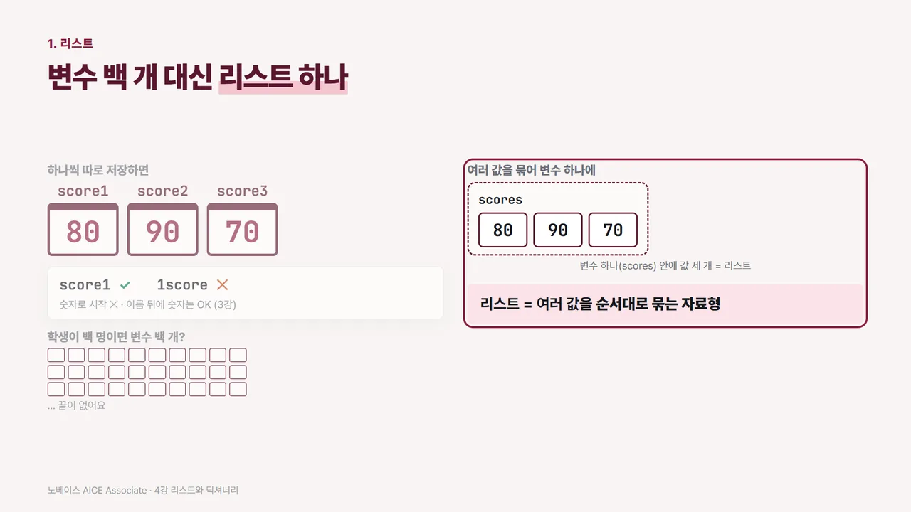
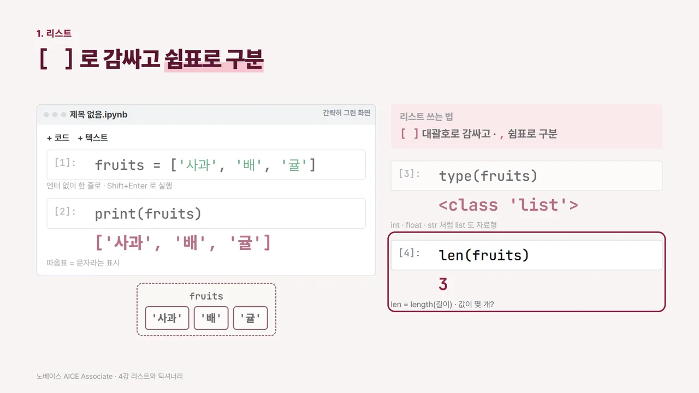
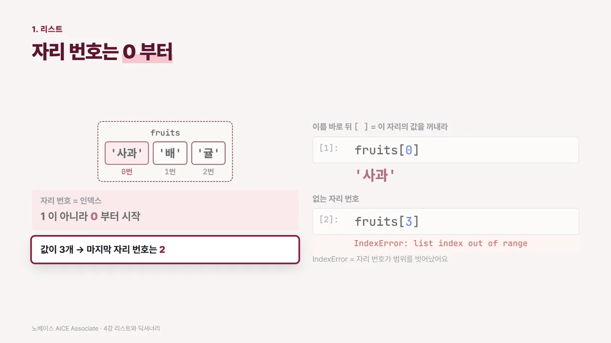
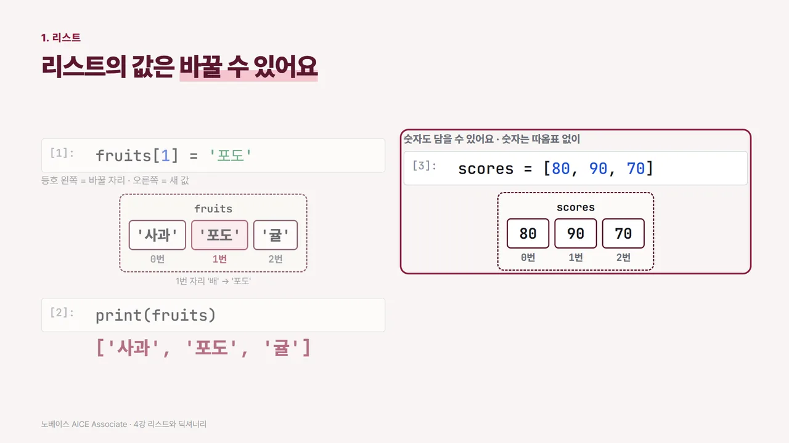
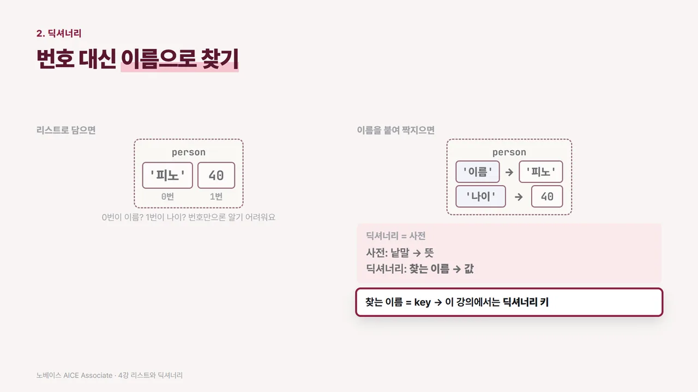
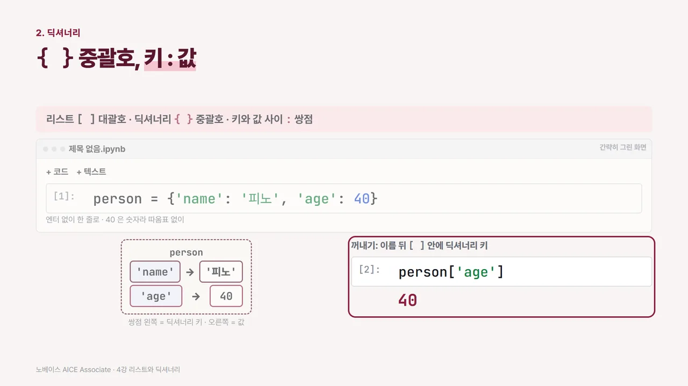
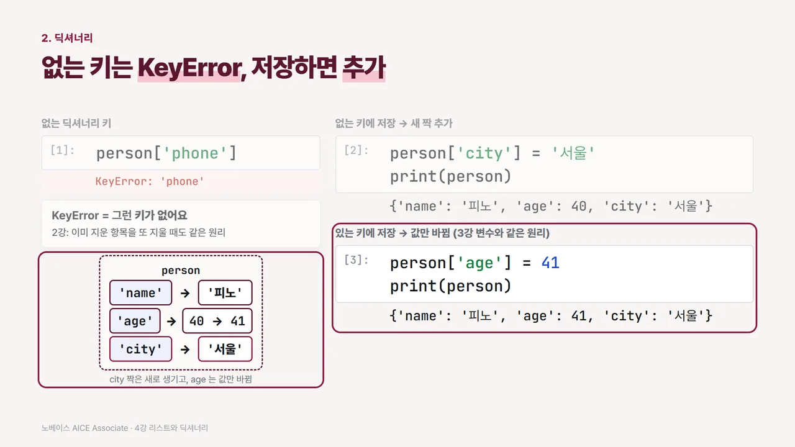
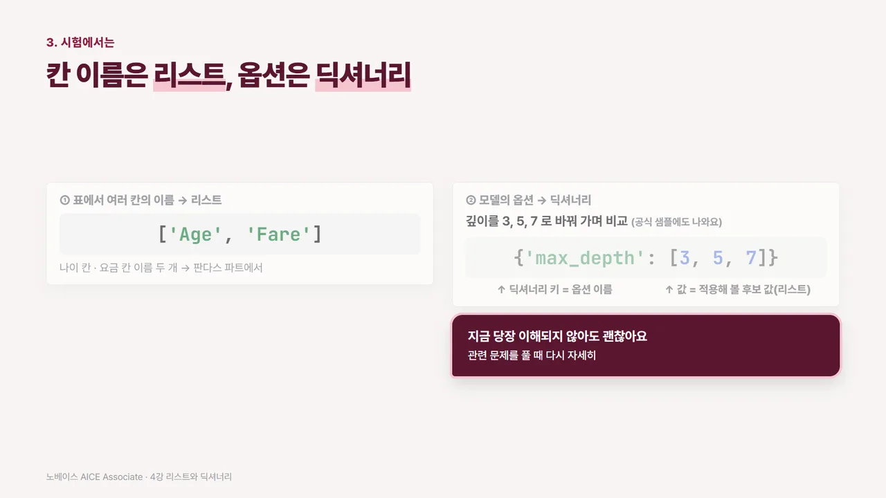
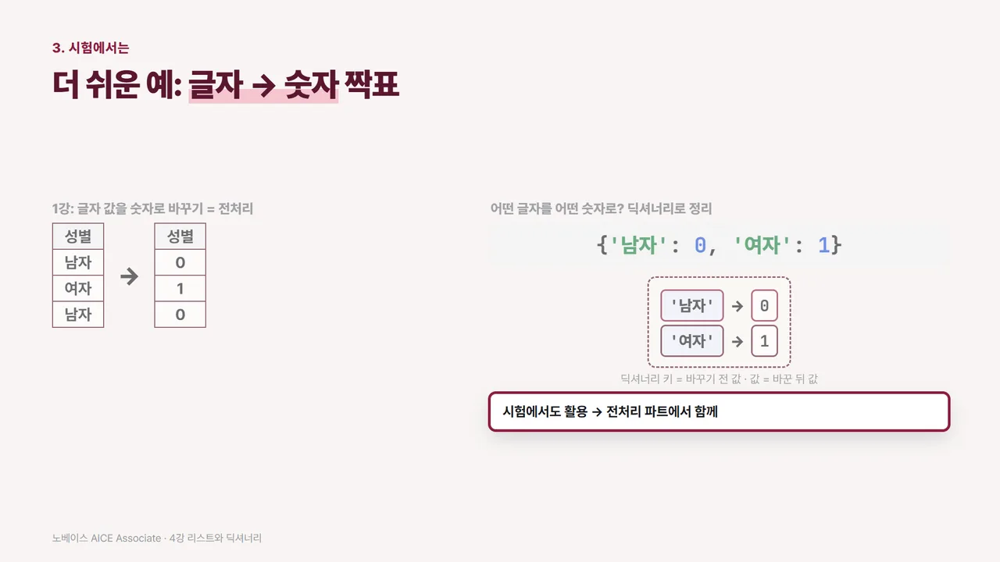

리스트와 딕셔너리
4강 영상에서 배운 내용을 읽기 쉽게 정리했어요. 코드의 결과는 모두 실제로 실행한 값이에요. 인쇄하거나 「PDF로 저장」하면 교재처럼 볼 수 있어요.
인쇄 창에서 여백은 「기본값」, 「머리글 및 바닥글」은 끄고 저장하면 쪽마다 여백과 채널 정보가 깔끔하게 들어가요.
01오늘의 핵심
02왜 리스트가 필요할까요

3강에서 배운 변수는 값에 이름을 붙여 보관하는 상자예요. 지금까지는 변수 하나에 값을 하나씩 넣었어요. 학생 세 명의 점수를 하나씩 따로 저장하면 score1, score2, score3 처럼 변수를 세 개 만들어야 하고, 학생이 백 명이면 변수가 백 개 필요해요.
여러 값을 한 줄로 묶어서 변수 하나에 넣을 수 있다면 편하겠죠? 파이썬에서는 리스트로 그렇게 할 수 있어요. 리스트는 여러 값을 순서대로 묶는 자료형이에요.
03리스트 만들기

리스트는 대괄호 [ ] 로 감싸고, 값과 값 사이는 쉼표로 구분해요. 셀 안에서 엔터를 누르지 말고 한 줄로 이어서 입력한 뒤 Shift + Enter 로 실행해요.
fruits = ['사과', '배', '귤']
print(fruits)
type(fruits)
len(fruits)
04자리 번호로 꺼내기

리스트 안의 값에는 자리 번호가 붙어 있어요. 이 번호를 인덱스라고 불러요. 파이썬의 자리 번호는 1이 아니라 0부터 시작해서, 사과는 0번, 배는 1번, 귤은 2번이에요.
값을 꺼낼 때는 리스트 이름 바로 뒤에 대괄호를 붙여요. 이름 바로 뒤에 붙은 대괄호는 "이 자리의 값을 꺼내라"라는 뜻이에요.
fruits[0]
fruits[3]
05값 바꾸기 · 숫자 리스트

등호 왼쪽에 바꿀 자리 번호를, 오른쪽에 새 값을 써요.
fruits[1] = '포도'
print(fruits)
리스트에는 숫자도 담을 수 있어요. 숫자는 따옴표 없이 입력해요.
scores = [80, 90, 70]
06딕셔너리: 번호 대신 이름으로

어떤 값은 순서보다 무엇을 나타내는 값인지가 더 중요해요. 한 사람의 이름과 나이를 저장할 때, 0번 · 1번보다 "이름" · "나이"라고 적어 두는 게 알아보기 쉬워요.
이렇게 찾는 것의 이름과 값을 짝지어 묶는 자료형을 딕셔너리라고 불러요. 딕셔너리도 변수 하나에 저장해요. 딕셔너리는 사전이라는 뜻이에요. 사전에서 낱말을 찾으면 뜻이 나오는 것처럼, 찾는 것의 이름을 넣으면 그에 해당하는 값이 나와요.
찾을 이름을 영어로 key 라고 해요. 키보드의 키와 헷갈리지 않게 이 과정에서는 딕셔너리 키라고 불러요.
07딕셔너리 만들기 · 꺼내기

리스트는 대괄호였다면, 딕셔너리는 중괄호 { } 로 감싸요. 딕셔너리 키와 값 사이에는 점 두 개가 위아래로 찍힌 쌍점 : 을 써요. 40 은 숫자라서 따옴표 없이 입력해요.
person = {'name': '피노', 'age': 40}값을 꺼낼 때는 리스트처럼 이름 바로 뒤에 대괄호를 붙이되, 자리 번호 대신 딕셔너리 키를 넣어요.
person['age']
08없는 키 · 짝 추가 · 값 바꾸기

person 에는 name 과 age 만 들어 있어요. 없는 딕셔너리 키 phone 을 꺼내면 에러가 나요.
person['phone']
person['city'] = '서울' print(person)
person['age'] = 41 print(person)
09시험에서는 어디에 쓸까요

- 표에서 여러 칸의 이름을 지정할 때 → 리스트. 예를 들어 나이 칸과 요금 칸만 골라내라는 문제가 나오면 두 칸의 이름을 리스트로 적어요(판다스 파트에서 자세히).
- 모델의 옵션 값을 정리할 때 → 딕셔너리. 모델의 깊이를 3, 5, 7로 바꿔 가며 성능을 비교할 때, 옵션의 이름과 적용해 볼 후보 값들을 짝지어 정리해요. 공식 샘플 문제에도 이런 형태가 나와요. max_depth 는 깊이를 설정하는 옵션의 이름이고, 대괄호 안의 3, 5, 7은 적용해 볼 값들이에요.

1강에서 남자, 여자처럼 글자로 된 값을 숫자로 바꾸는 일을 전처리라고 했어요. 어떤 글자를 어떤 숫자로 바꿀지도 딕셔너리로 정리할 수 있어요. 쌍점 왼쪽의 남자가 딕셔너리 키, 즉 바꾸기 전 값이고, 오른쪽의 0이 바꾼 뒤 값이에요. 전처리 파트에서 함께 배워요.
10스스로 확인하기
nums = [10, 20, 30]일 때nums[2]는? (정답: 30, 0번부터 세면 2번은 세 번째)info에 name 과 age 만 있을 때info['score']를 꺼내면? (정답: KeyError, score 라는 키가 없어요)